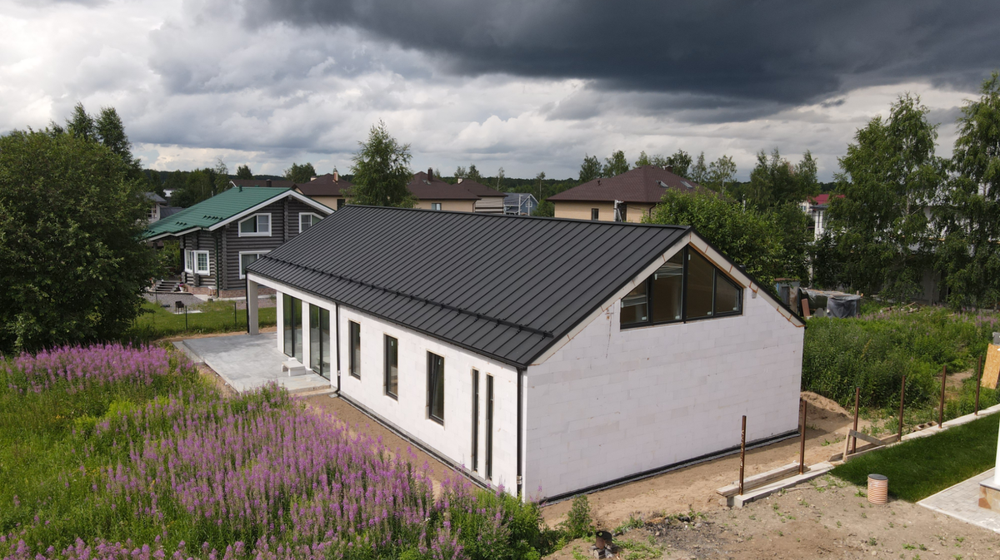
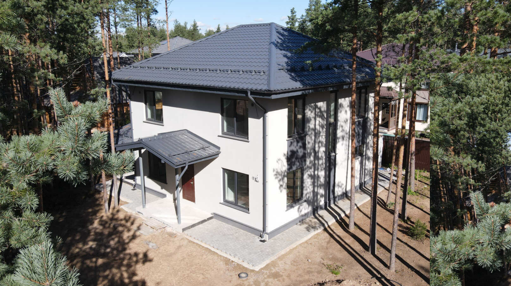
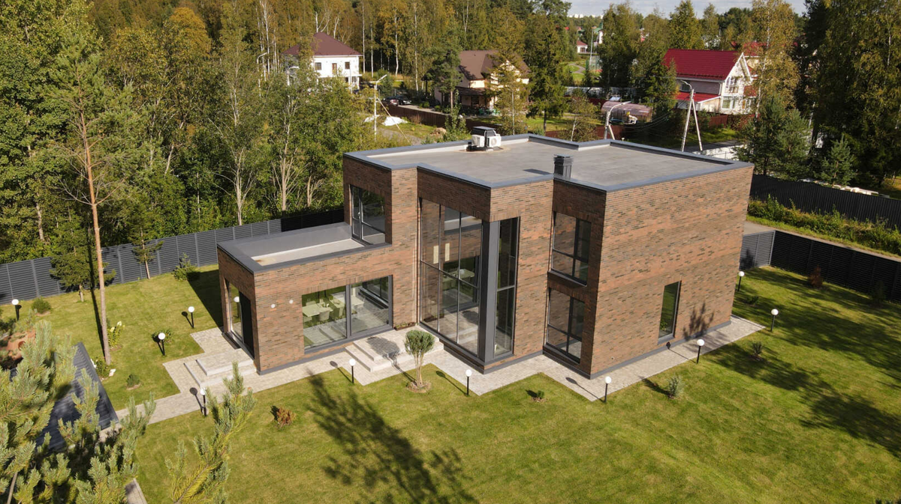
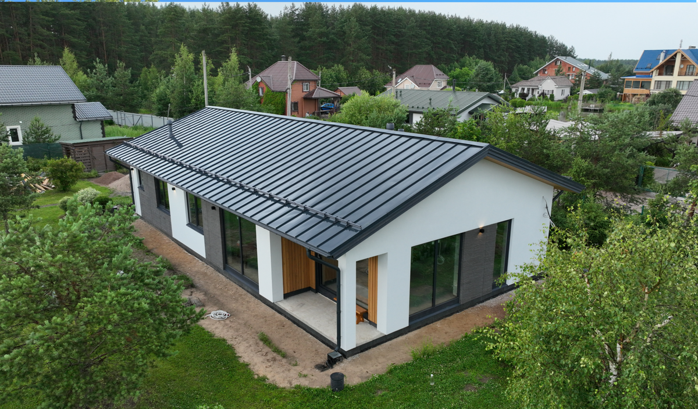
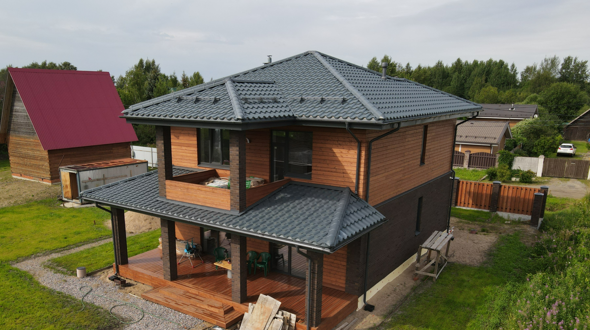

Сегодня спрос на дома из газобетона продолжает расти: его выбирают за быстрые сроки строительства, надёжность и доступную стоимость. После того как стены сложены, возникает вопрос — какой материал взять для фасада. Главное правило простое: отделка должна быть паропроницаемой или собираться по вентилируемой схеме с зазором. Если этим пренебречь, через 2–3 сезона по швам пойдут трещины. Ниже — пять рабочих вариантов отделки, плюсы и минусы каждого, типовые ошибки и FAQ.
Что важно учесть при выборе материала
Газобетон «дышит» — водяной пар из дома идёт сквозь стену наружу. Это нормальный режим, под него спроектирована кладка. Если снаружи стоит плотный барьер (цементная штукатурка, плёнка не той стороной), пар утыкается в него и конденсируется в блоке. При морозе вода в порах замерзает и рвёт перемычки между ячейками.
Главное требование: паропроницаемость отделки не должна быть ниже паропроницаемости газобетона. Сам газобетон не боится осадков, он тёплый, такой дом можно не утеплять. Отделка нужна больше для эстетики и защиты от механических повреждений — но выбрать её надо так, чтобы стена осталась сухой.

Декоративная штукатурка — самый частый выбор
Декоративная штукатурка отличается большим выбором фактур и оттенков (её можно заколеровать в любой цвет), на рынке много вариантов под разный бюджет. Для газобетона подходят лёгкие минеральные, силикатные и силиконовые составы — все они паропроницаемы.

- Срок службы при правильной технологии — десятилетия.
- Создаёт защитный слой, прикрывает стены от влаги и ветра.
- Большой выбор фактур: «шуба», «короед», гладкий, барашек.
- Простой ремонт локальным участком.
- Дороже сайдинговых панелей, но дешевле клинкера и облицовочного камня.
- Восприимчивость к механическим ударам.
- Перекрашивать примерно раз в 10–15 лет.
Клинкерная плитка — «кирпич без нагрузки»
Клинкерная плитка на фасаде визуально похожа на каменную или кирпичную кладку. Стоимость такого решения значительно ниже сплошной кирпичной облицовки, а вес меньше — лишний расчёт фундамента не нужен. В наших проектах мы часто используем сочетание декоративной штукатурки, клинкерной плитки и планкена из лиственницы — смотрится стильно и спокойно.

- Долговечность — десятилетия без вмешательства.
- Устойчивость к перепаду температур и морозу.
- Большой выбор фактур и цветов.
- Хорошо комбинируется со штукатуркой и деревом.
- Не самый бюджетный материал.
- Хрупкость при резке во время монтажа.
- На вентилируемом фасаде обязательны гибкие связи и зазор.
Планкен — натуральное дерево по вентфасаду
Натуральный отделочный материал, чаще всего из лиственницы, дуба или сосны. Используют для отделки фасадов и для построек на участке. На газобетоне крепится только по вентилируемой схеме: обрешётка, зазор 25–40 мм, скрытое крепление «змейкой» — саморезы на лицевой стороне не видны.

- Натуральный материал, скандинавская эстетика.
- Воздушный зазор не даёт дереву гнить.
- Большой выбор досок по ширине и профилю.
- Срок службы короче, чем у клинкера и камня.
- Обработка защитным составом раз в 3–5 лет.
- При монтаже без зазора гниение приходит за 2–3 сезона.
Имитация бруса — «брусовой» вид без сруба
Натуральный материал с прямоугольным профилем, внешне напоминает брусья. Чаще всего на рынке предлагают доски из хвойных пород, лиственницы и дуба. Монтаж — тот же вентилируемый пирог, что и для планкена.

- Устойчивость к ударам.
- Натуральный экологичный материал.
- Долговечность при правильном уходе, ремонт по одной доске.
- Может усыхать и впитывать влагу, особенно нетермообработанная.
- Нужна регулярная обработка защитным составом.
Натуральный камень — точечный акцент
Облицовка натуральным камнем позволяет собрать узнаваемый фасад благодаря большому выбору оттенков, текстур и форм. Крепится к газобетону только по вентилируемой схеме на металлическую подсистему с анкерами.
- Десятилетия без вмешательства.
- Не боится механики, влаги и перепадов температуры.
- Камнем можно собрать характерный авторский фасад.
- Высокая цена материала и монтажа.
- Сплошная каменная облицовка требует расчёта фундамента — это решение конструктора на этапе проекта.
- На практике камень чаще ставят акцентом: цоколь, портал, арки.
Чего нельзя делать с фасадом из газобетона
- Цементно-песчаная штукатурка по газобетону. Паронепроницаема: отслоение и трещины за 1–2 сезона.
- Отделка по сырой кладке без выдержки. Свежий блок отдаёт влагу, штукатурка ложится «на воду» — швы трескаются.
- «Глухой пирог» без вентилируемого зазора. Клинкер, камень или дерево, плотно приложенные к стене, превращают газобетон в губку.
- Пароизоляционная плёнка снаружи газобетона. Перепутали стороны — заблокировали паровывод.
- Нет гибких связей в навесном фасаде. Подсистема без 4–5 связей на м² держится плохо.
Что DOMGAZOBETON делает с фасадом на своих объектах
За 10 лет работы и 300 построенных домов (около 52 000 м²) видели, как все пять материалов ведут себя на горизонте 5+ лет. Стандартный конструктив — газобетон D400, 400 мм. На Open Village 2025 и Urban 2025 показывали типовой дом 300 м² — фасадная схема отработана серийно, не на единичных проектах.
Фасад идёт частью комплектации «под ключ»: варианты отделки, пример проекта, видео на YouTube.
Частые вопросы
Можно ли вообще не отделывать фасад из газобетона?
Сезон газобетон выдержит — он не боится осадков. Но без отделки кладка быстрее набирает влагу и теряет тепло. На длинной дистанции стену лучше закрыть.
Через сколько после кладки стен можно начинать отделку?
Под штукатурку — минимум один отопительный сезон, чтобы блоки вышли на равновесные 4–5% влажности. Вентилируемый фасад монтируют раньше, после набора кладкой проектной прочности.
Почему нельзя штукатурить газобетон обычной цементно-песчаной смесью?
ЦПС не пропускает пар. Влага конденсируется внутри блока, при морозе расширяется — трещины за 1–2 зимы. Нужна паропроницаемая силикатная, силиконовая или лёгкая минеральная штукатурка.
Какой вентиляционный зазор оставлять между газобетоном и навесным фасадом?
Минимум 25–40 мм. Меньше — циркуляция недостаточна, влага не выводится. Для отдельных систем зазор делают и больше — это зависит от подсистемы.
Источники
- НААГ — рекомендации по применению автоклавного газобетона: gazo-beton.org.
- ТехноНИКОЛЬ — паропроницаемые фасадные системы: tn.ru.
- ДОМ.РФ — рынок ИЖС и стандарты индивидуального жилищного строительства: дом.рф.